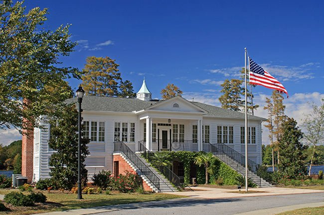

About me
My name is Daniel Thompson. I am a management consultant focusing on strategy and innovation. I am the father of two beautiful boys and the husband to a perfect wife. I'm from South Carolina and enjoy researching about cloud native technologies.
Hartsville, South Carolina
Hartsville traces its origins to Thomas Edward Hart, who came to the area in 1817 and built a plantation along Black Creek. His son, John Lide Hart, developed Hartsville Plantation in what is now downtown, creating a carriage factory, steam-powered sawmill, grist mill and more.